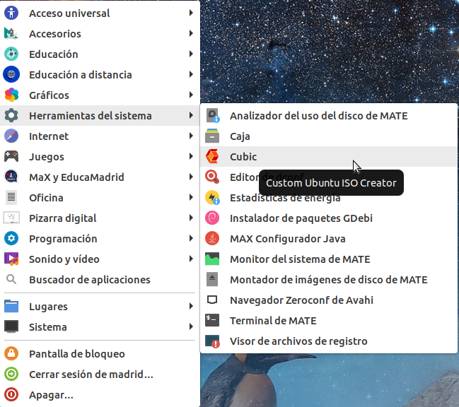
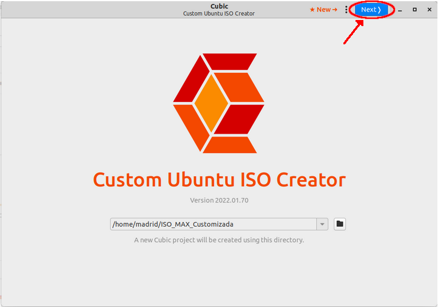
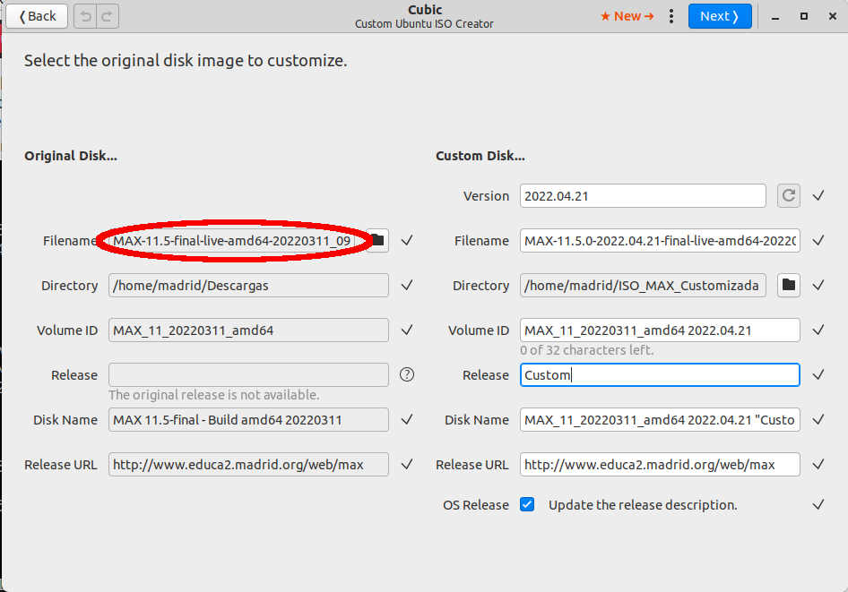
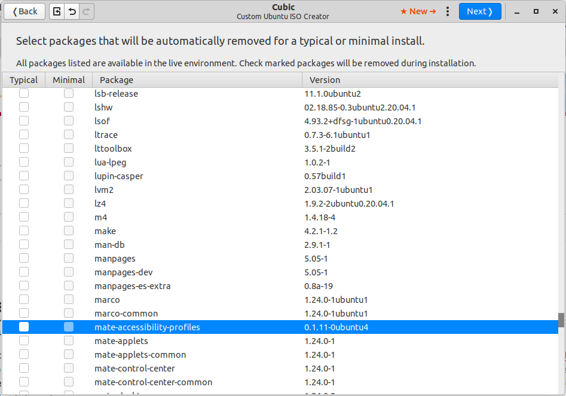
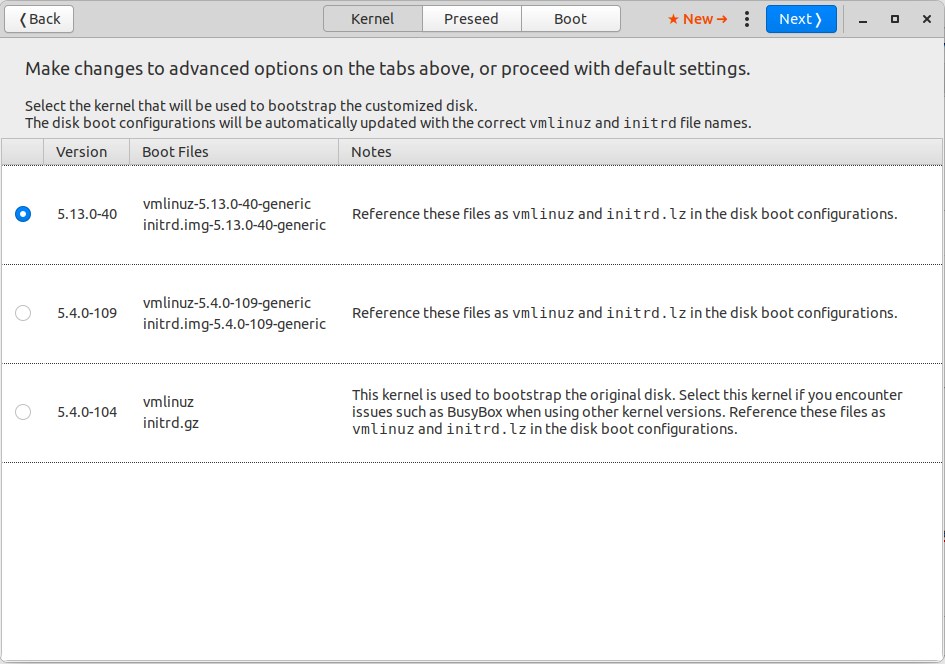
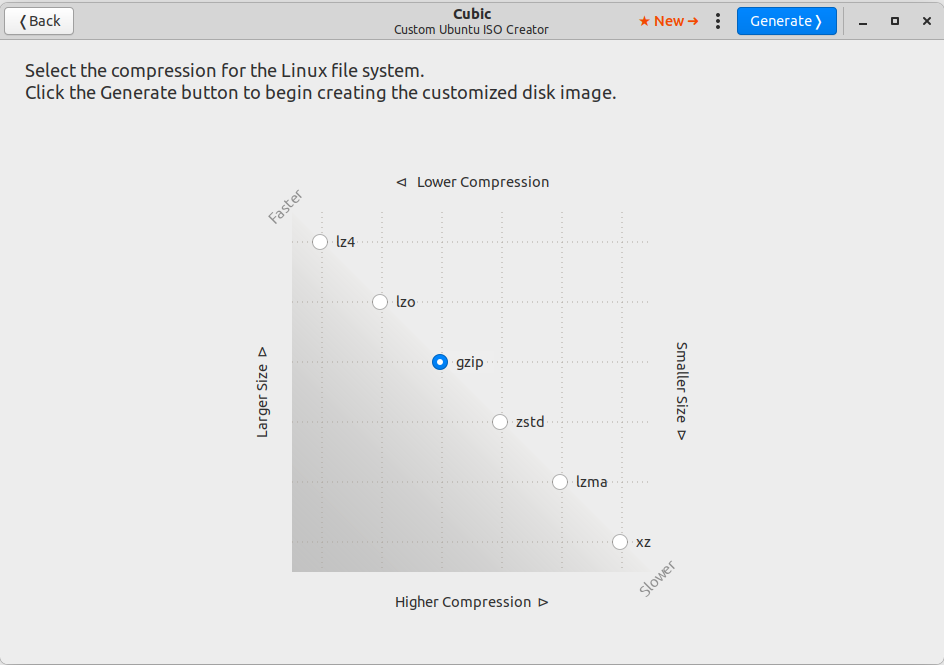

En ocasiones tenemos que instalar MAX en equipos que equipos con hardware muy nuevo o muy específico y que solo está soportado por núcleos del kernel más modernos que el original de la instalación de MAX. O queremos que nuestra imagen para instalar MAX en nuestros equipos incluya un software adicional o no queremos que se instale un software que MAX incluye por defecto.
Podemos resolver este problema siguiendo las explicaciones que a continuación vamos a dar. En concreto, nos centraremos en la instalación de una versión del kernel superior, pero el método es fácilmente adaptable a la adición o eliminación de software a nuestra imagen.
Instalación del software necesario
Para modificar la imagen o ISO de MAX vamos a utilizar un software especial llamado Cubic (Custom Ubuntu ISO Creator), que no se encuentra incluido en los repositorios de MAX. Por lo tanto, para poder instalarlo, tenemos que añadir a los repositorios de nuestro equipo el servidor correspondiente en Launchpad, actualizarlos e instalar Cubic (debemos aceptar todo):
sudo apt-add-repository ppa:cubic-wizard/release
sudo apt update
sudo apt install cubicYa tenemos instalado Cubic.
Creación de una imagen adaptada
Una vez concluido el proceso podemos ejecutar el programa desde el menú: Inicio -> Herramientas del sistema -> Cubic (nos pedirá la contraseña de madrid para poder ejecutarlo)

En la ventana que nos aparece creamos la carpeta en la que queremos que se ubique nuestro proyecto, con todos los archivos necesarios y la imagen que se genere. Es importante prever que se va a ocupar mucho espacio (varias Gigas de datos) de disco.
Debemos hacer clic en el botón azul (Next>) de la esquina superior derecha de la ventana.
En al siguiente ventana, en el campo Filename de la columna izquierda de la nueva ventana debemos elegir la imagen original (que podemos descargar desde la web de MAX) en la que nos queremos basar para desarrollar nuestro proyecto. En la columna de la derecha se pueden personalizar algunos campos para nombrar y diferenciar nuestra imagen.

A continuación, tras hacer clic en el botón de Next> que aparece en la parte superior derecha de la ventana, el programa procede a analizar y descomprimir la ISO que le hemos indicado en un proceso que tardará más o menos en función de la capacidad de nuestro equipo.
Tras la espera nos aparecerá una nueva ventana en la que trabajaremos «dentro» del entorno que se ha generado al descomprimir la imagen ISO. Es un entorno aislado del resto de nuestro equipo que se conoce como chroot. Por esta razón, aunque vayamos a realizar operaciones de administración del sistema, no va a ser necesario preceder nuestras instrucciones del sudo habitual.
Aquí es donde haremos los cambios relacionados con la incorporación o eliminación de nuevos paquetes a «nuestra» distribución. Recuerdo que nuestro ejemplo consiste en incluir un kernel superior al que ya trae la versión de MAX.
En primer lugar actualizaremos el sistema
apt update
apt dist-upgradeSalvo que estemos seguros de lo contrario, aceptaremos todas las preguntas que nos pueda hacer durante el proceso. Con ello, nuestra nueva imagen tendrá actualizado todo el sistema.
A continuación procedemos a instalar el kernel deseado. Para ello seguimos las instrucciones que mencionamos más atrás de un Truco de MAX.
apt install --install-recommends linux-generic-hwe-20.04 xserver-xorg-hwe-18.04Con estas instrucciones instalamos la versión del kernel 5.13.X.X y los driver de gráficos correspondientes.
De esta forma, también podemos instalar los programas que queramos que aparezcan en nuestra versión adaptada y quitar aquellos que consideremos innecesarios (atención a las dependencias que podamos romper). Por ejemplo, la siguiente instrucción dará lugar a una imagen que incluya el programa de diseño de interiores Sweet Home 3d (que ya se podrá ejecutar en la versión live).
apt install sweethome3dUna vez que hayamos terminado este proceso de instalaciones y/o desinstalaciones pasaremos a la siguiente fase del proceso haciendo clic en el botón de Next> que aparece en la parte superior derecha de la ventana. Deberemos esperar un momento a que el programa haga las comprobaciones y modificaciones necesarias.
En la nueva ventana podemos elegir aquellos programas que queremos que, tras la instalación se desinstalen. Es decir, podemos instalar programas que solo aparezcan en la versión «live», pero que al instalarse en el ordenador desaparezcan. Si es el caso, marcamos la casilla correspondiente a esos programas que no queremos que se instalen en el ordenador pero si estén en la versión live. Hay que tener mucha precaución con las posibles dependencias que se dejen de cumplir con estas eliminaciones. En nuestro ejemplo no queremos eliminar ningún programa, así que hacemos clic directamente en el botón de Next> que aparece en la parte superior derecha de la ventana.
La siguiente ventana tiene tres pestañas, pero la más importante para nuestro ejemplo es la primera, titulada Kernel, en la que podemos elegir el kernel que se cargará en la versión «live». Las otras dos, no nos interesan. Sirven para cambiar algunos aspectos de la instalación, como selección de idioma, teclado, etc.
En nuestro caso, marcamos la versión del kernel que hemos instalado, para que se reconozca el hardware más moderno, como buscábamos en un origen.
Pero, en general, podemos dejar estas tres pestañas sin modificar nada y hacer clic en el botón de Next> que aparece en la parte superior derecha de la ventana.
Por último, podemos elegir el grado de compresión con que queremos que se genere nuestra imagen. Lógicamente, a mayor compresión mayor tiempo de proceso, en una progresión que es exponencial. Es una buena opción elegir la que nos ofrece por defecto, gzip.
Al hacer clic en el botón azul de la parte superior de la ventana se procederá a generar la imagen ISO de nuestro sistema adaptado, proceso que suele prolongarse durante un tiempo que dependerá de la potencia de nuestro equipo.
Al finalizar el proceso encontraremos la imagen ISO generada en el directorio que creamos al principio de todo el proceso. Podremos instalarla en un pendrive para su posterior utilización siguiendo las instrucciones que para ello encontramos en el manual de MAX.
Información relacionada
- https://external.educa2.madrid.org/web/max/kernel: documentación sobre el proceso de modernizar la versión del kernel en MAX.
- https://github.com/PJ-Singh-001/Cubic: página web del proyecto Cubic, esencial para la realización del proceso.
- https://linuxhint.com/customize_ubuntu_iso_create_spin/: página de la que he sacado la idea para este tutorial.
- https://max.educa.madrid.org/manual/max11/trabajar_desde_un_dispositivo_usb_en_modo_live.html: información para grabar una imagen de arranque en USB desde MAX.